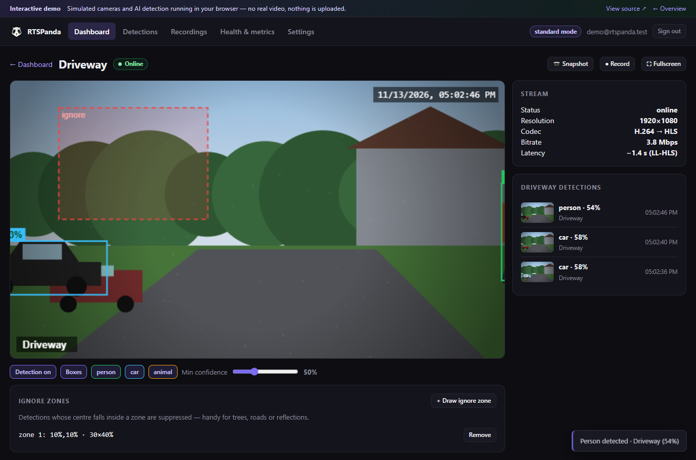

Your cameras, your server, your rules.
RTSPanda turns any RTSP/IP camera into browser live view, recordings and AI-powered alerts — one Go binary with an embedded React UI, a mediamtx relay and optional YOLO or Frigate detection. Runs on a server or a Raspberry Pi.


demo@rtspanda.test · Password DemoAdmin!2026Simulated cameras in your browser. No real video, nothing uploaded.

What it does
The pieces of an NVR, without the bloat — and with detection you can actually run on modest hardware.
Browser live view
Low-latency HLS via mediamtx, multi-camera wall, snapshots and fullscreen — no plugins.
AI detection
Real-time YOLO (ONNX Runtime) for people, vehicles and animals, or Frigate. Ignore zones and per-class confidence cut false alarms.
Discord alerts
Snapshot or clip attached, cooldowns, mention suppression and per-camera rules.
Recording & retention
Manual or detection-triggered recording with retention policy and optional external storage.
Runs on a Raspberry Pi
Pi mode does ingest and view locally and offloads detection to snapshot AI (Claude/OpenAI) or a remote YOLO worker.
Observability
Health and readiness endpoints, Prometheus metrics, stream reset and ARM thermal monitoring.
Pick your deployment mode
One codebase, three runtime profiles. Toggle them in the demo’s Settings to see how behavior changes.
| Mode | Hardware | Detection | Best for |
|---|---|---|---|
| standard | x86 server, optional GPU | Real-time YOLO (local or remote worker) | Full production stack |
| pi | Raspberry Pi / ARM | Snapshot AI or remote YOLO worker | Edge ingest/view with alerts |
| viewer | Desktop or server | None | Live view and optional recording |
Architecture
A single Go backend serves the API and the embedded React app, supervises the relay and talks to an optional detector.
IP cameras ──RTSP──► mediamtx relay ──LL-HLS──► Go backend (REST API + embedded React UI) ──► Browser
│ │
│ └─► SQLite · snapshots · recordings
▼
Detector: YOLO worker (FastAPI + ONNX) · Frigate · Snapshot AI
│
▼
Discord alerts · Prometheus metrics
Run it yourself
Docker Compose is the quickest path for a standard server.
- Clone and start
git clone https://github.com/248Tech/RTSPanda.git cd RTSPanda docker compose up --build -d
- Open the UI at
http://<host>:8080and add a camera with its RTSP URL. - Verify
curl -s http://127.0.0.1:8080/api/v1/health/ready